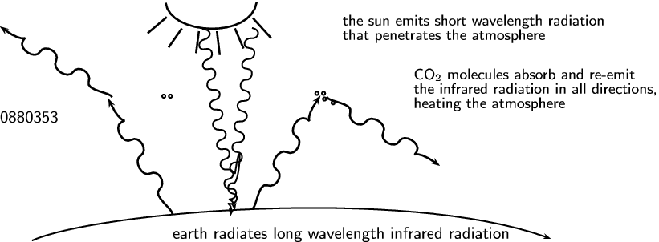

<code>
(0,-2.59)(15.975868,2.57)
\psbezier[linewidth=0.04](3.4958684,2.53)(3.5758684,1.85)(5.2958684,1.75)(5.4158683,2.55)
\psline[linewidth=0.04cm](3.5158684,2.23)(3.1158683,1.89)
\psline[linewidth=0.04cm](3.8358684,1.99)(3.5558684,1.59)
\psline[linewidth=0.04cm](4.1958685,1.93)(4.1358685,1.47)
\psline[linewidth=0.04cm](4.5758686,1.93)(4.6358685,1.43)
\psline[linewidth=0.04cm](4.9558682,1.99)(5.1358685,1.57)
\psline[linewidth=0.04cm](5.3358684,2.21)(5.7158685,1.79)
\psbezier[linewidth=0.04,arrowsize=0.05291667cm 2.0,arrowlength=1.4,arrowinset=0.4]{->}(5.3158684,-1.8245102)(5.4166245,-1.808687)(5.439445,-1.2557855)(5.6350846,-1.3248497)(5.830724,-1.393914)(5.9961104,-1.0932733)(5.831161,-0.9905677)(5.666211,-0.8878622)(5.878371,-0.53134257)(6.0578475,-0.6263778)(6.2373247,-0.7214131)(6.42343,-0.38185132)(6.2439528,-0.28681606)(6.064476,-0.19178078)(6.281192,0.17768885)(6.4606686,0.082653575)(6.640146,-0.012381695)(6.358866,-0.0017902247)(6.759594,0.57)
\psbezier[linewidth=0.03,arrowsize=0.05291667cm 2.0,arrowlength=1.4,arrowinset=0.4]{->}(4.266691,1.9676449)(4.4793305,1.9886502)(4.4655175,1.7896867)(4.310693,1.7585212)(4.1558685,1.7273557)(4.168905,1.5119989)(4.3296576,1.5552567)(4.4904103,1.5985147)(4.5284834,1.3772986)(4.3832135,1.3371572)(4.237943,1.2970159)(4.2414255,1.090635)(4.4099193,1.1354511)(4.578413,1.1802672)(4.579593,0.9407257)(4.455734,0.9157933)(4.331874,0.89086086)(4.3371696,0.6739458)(4.5015483,0.69613546)(4.665927,0.71832514)(4.6848917,0.5150607)(4.530067,0.4838952)(4.3752427,0.4527297)(4.40969,0.2525818)(4.5740685,0.2747715)(4.738447,0.2969612)(4.72826,0.07692955)(4.579364,0.05785641)(4.4304676,0.03878328)(4.48221,-0.16878216)(4.6311064,-0.14970903)(4.7800026,-0.13063589)(4.8203783,-0.3186914)(4.667367,-0.36039102)(4.514355,-0.4020906)(4.564285,-0.5991219)(4.709555,-0.55898064)(4.8548255,-0.5188393)(4.90064,-0.7384971)(4.7458153,-0.7696626)(4.590991,-0.8008281)(4.6368055,-1.0204859)(4.79163,-0.9893204)(4.9464545,-0.9581549)(4.967232,-
1.1719534)(4.818336,-1.1910266)(4.6694393,-1.2100997)(4.7307363,-1.426641)(4.8700786,-1.398592)(5.0094204,-1.370543)(5.022457,-1.5858998)(4.883115,-1.6139488)(4.743773,-1.6419978)(4.908641,-1.5761135)(4.955779,-1.85)
\pscircle[linewidth=0.03,dimen=outer](6.8258686,0.62){0.05}
\pscircle[linewidth=0.03,dimen=outer](7.0258684,0.42){0.05}
\pscircle[linewidth=0.03,dimen=outer](6.8458686,0.5){0.05}
\pscircle[linewidth=0.03,dimen=outer](6.6858683,0.62){0.05}
\psbezier[linewidth=0.04,arrowsize=0.05291667cm 2.0,arrowlength=1.4,arrowinset=0.4]{->}(6.8915195,0.5453803)(6.9068,0.44454044)(7.4595704,0.41874084)(7.389453,0.22347647)(7.3193355,0.028212115)(7.619081,-0.13879196)(7.7226734,0.025601879)(7.8262663,0.18999572)(8.181638,-0.024081578)(8.085637,-0.20304397)(7.989636,-0.38200638)(8.32819,-0.5699386)(8.4241905,-0.39097622)(8.520192,-0.21201381)(8.888489,-0.43071732)(8.792487,-0.6096797)(8.696486,-0.7886421)(8.708593,-0.5074236)(9.278216,-0.91122675)
\psbezier[linewidth=0.03,arrowsize=0.05291667cm 2.0,arrowlength=1.4,arrowinset=0.4]{->}(0.6758684,-2.49)(2.0158684,-1.89)(8.495869,-1.33)(11.615869,-2.45)
\psbezier[linewidth=0.04,arrowsize=0.05291667cm 2.0,arrowlength=1.4,arrowinset=0.4]{->}(2.3639035,0.53901273)(2.3501835,0.64007664)(1.7978777,0.67441475)(1.8710039,0.8685723)(1.9441302,1.0627298)(1.6470013,1.2343458)(1.5408807,1.0715723)(1.43476,0.9087988)(1.082739,1.1283418)(1.1814939,1.3057994)(1.2802488,1.483257)(0.9446391,1.6763983)(0.8458842,1.4989406)(0.7471294,1.321483)(0.38225624,1.5458515)(0.4810111,1.723309)(0.579766,1.9007666)(0.56331503,1.6197687)(0.0,2.0323257)
\psbezier[linewidth=0.04,arrowsize=0.05291667cm 2.0,arrowlength=1.4,arrowinset=0.4]{->}(3.6348133,-1.9369571)(3.671527,-1.8418032)(3.204232,-1.5453975)(3.3619184,-1.4105656)(3.5196047,-1.2757337)(3.3420558,-0.9821116)(3.1705978,-1.0735391)(2.99914,-1.1649667)(2.796613,-0.8028884)(2.9686987,-0.6950449)(3.1407845,-0.58720136)(2.9399037,-0.25616616)(2.767818,-0.3640097)(2.5957322,-0.47185323)(2.3842728,-0.09935028)(2.5563583,0.008493258)(2.728444,0.1163368)(2.5785341,-0.121901385)(2.2839727,0.5111552)
\psbezier[linewidth=0.03,arrowsize=0.05291667cm 2.0,arrowlength=1.4,arrowinset=0.4]{->}(4.0897393,2.0019855)(4.2958684,1.958283)(4.2253532,1.7663379)(4.0706806,1.7825129)(3.9160075,1.7986879)(3.866014,1.5824502)(4.02976,1.5763997)(4.1935062,1.5703491)(4.165374,1.340752)(4.017095,1.345185)(3.8688161,1.3496181)(3.8124285,1.1451223)(3.9839082,1.138263)(4.155388,1.1314037)(4.087248,0.89491713)(3.9635096,0.9078571)(3.8397713,0.9207971)(3.7820442,0.70536816)(3.9431107,0.67745125)(4.1041775,0.6495343)(4.063257,0.44342107)(3.9085844,0.45959604)(3.7539117,0.47577104)(3.7284586,0.2680403)(3.8895254,0.24012335)(4.050592,0.21220641)(3.9773977,-0.0016050348)(3.831798,0.024694402)(3.6861987,0.050993837)(3.674873,-0.1692876)(3.8204727,-0.19558704)(3.966072,-0.22188649)(3.9496922,-0.41949278)(3.79368,-0.414251)(3.6376677,-0.4090092)(3.6276817,-0.6183574)(3.7759604,-0.6227905)(3.9242392,-0.62722355)(3.9038405,-0.8576294)(3.749168,-0.84145445)(3.594495,-0.8252794)(3.5740964,-1.0556853)(3.728769,-1.0718603)(3.883442,-1.
0880353)(3.8411818,-1.3050817)(3.6955824,-1.2787824)(3.5499828,-1.2524829)(3.5450516,-1.4845062)(3.684257,-1.4990637)(3.8234625,-1.5136212)(3.7734687,-1.729859)(3.6342633,-1.7153015)(3.4950578,-1.700744)(3.6692169,-1.6857369)(3.6343863,-1.97)
\pscircle[linewidth=0.03,dimen=outer](2.3658683,0.56){0.05}
\pscircle[linewidth=0.03,dimen=outer](2.2258685,0.56){0.05}
\rput(5.9658685,-2.365){earth radiates long wavelength infrared radiation}
\rput[tl](6,2.275){\small the sun emits short wavelength radiation}
\rput[tl](6,1.975){\small that penetrates the atmosphere}
\rput[tl](7.5,1.135){\small CO$_{2}$ molecules absorb and re-emit}
\rput[tl](7.5,0.835){\small the infrared radiation in all directions,}
\rput[tl](7.5,0.535){\small heating the atmosphere}
</code>